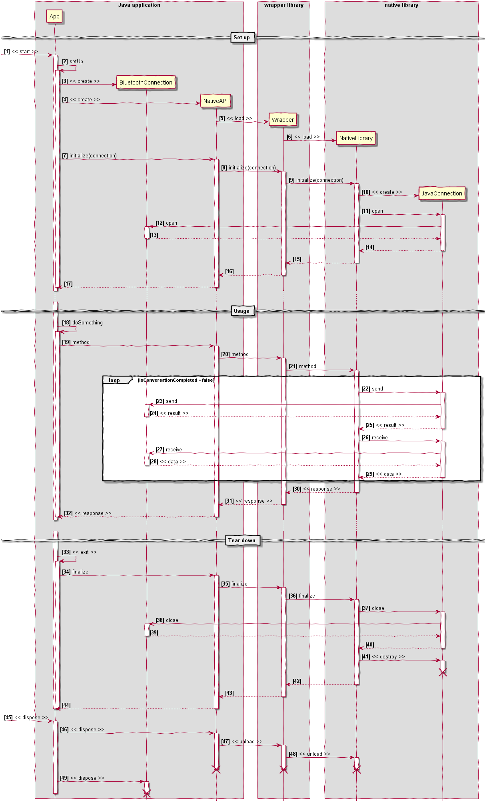
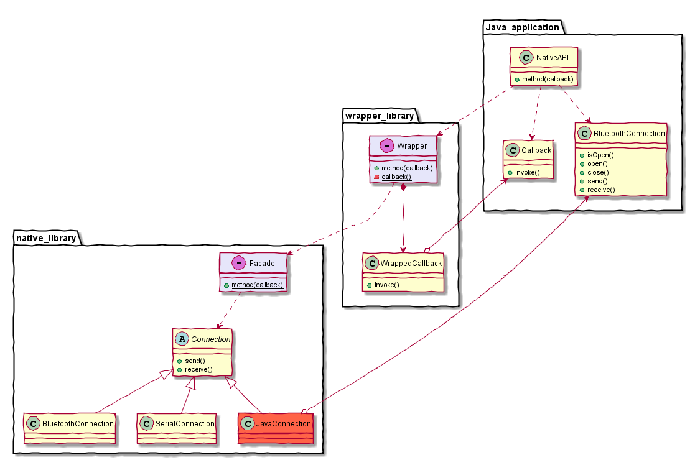

risorse | bluetooth c++ e android
Nel corso degli anni ho sviluppato un applicativo C++/Win32 per il controllo di uno strumento di misura: il programma si connette allo strumento via Bluetooth e scarica i dati acquisiti attraverso un protocollo di comunicazione binario ideato dal costruttore del multimetro. I dati raccolti vengono presentati all'utente e archiviati per consentire di condurre analisi a posteriori di varia natura.
Poco più di un anno fa ho effettuato uno studio di fattibilità del porting dell'applicativo su dispositivo mobile, nella fattispecie un terminale Android. Raccolgo qui qualche appunto circa le difficoltà incontrate nell'accedere al trasmettitore Bluetooth di un dispositivo Android da una libreria nativa C++.
Considerata la complessità dell'implementazione del protocollo di comunicazione, ho scelto di riutilizzare il codice C++ di acquisizione dei dati, lasciando all'applicativo Java la responsabilità della loro visualizzazione e memorizzazione. La reimplementazione del protocollo di comunicazione in Java è stata esclusa a priori.
Ho prima di tutto riorganizzato il codice C++ di comunicazione ed elaborazione dei dati in una libreria dinamica che successivamente ho portato in ambiente Linux.
Il porting del codice C++ da Windows a Linux è stata un'esperienza particolarmente istruttiva. Per quanto pensassi di aver sviluppato codice tutto sommato indipendente dalla piattaforma utilizzata (Win32), l'operazione ha richiesto un discreto numero di interventi correttivi. Altrettanto formativo è stato il sottoporre lo stesso sorgente a compilatori diversi (VC su Windows, GCC/Clang su Linux): le sorprese non sono mancate!
In seconda istanza ho definito un'interfaccia C per agevolare l'accesso alle funzionalità implementate dalla libreria nativa (l'originale, implementata in C/C++); per comodità ho scelto di utilizzare i tipi primitivi del linguaggio C come parametri di ingresso/uscita, optando invece per l'utilizzo di stringhe JSON come valore di ritorno:
extern "C" const char* method(int value);
Esempio di API C esposta dalla libreria nativa
L'accesso all'API nativa da parte dell'applicativo Java avviene attraverso una classe dedicata:
public class NativeAPI {
static {
System.loadLibrary("LIB-NAME_wrapper");
}
public native String method(int aValue);
...
}
Come si può dedurre dal frammento di codice, l'applicazione Java accede alla libreria nativa attraverso una libreria ausiliaria, denominata *_wrapper, che si occupa di effettuare il marshalling dei parametri di ingresso e del valore di ritorno, oltre ovviamente dell'invocazione del metodo nativo:
extern "C"
JNIEXPORT jstring JNICALL Java_xx_company_product_LIB-NAME_method(
JNIEnv* env, jobject thiz, jint value) {
return env->NewStringUTF(method(value));
}
Esempio di wrapping dell'API nativa method — notare la decorazione del metodo
La compilazione della libreria nativa con l'NDK per Android non va a buon fine, perché il Bluetooth su quella piattaforma non è (ancora?) disponibile — cfr. Android NDK Native APIs. Il problema è noto, e il suggerimento più comune è quello di fornire alla libreria nativa un accesso al Bluetooth attraverso un oggetto Java.
Fortunatamente il codice C++ originale già astrae dalla tipologia di connessione: il modulo che implementa il protocollo di comunicazione infatti, dovendo supportare la doppia modalità di connessione Bluetooth/seriale (la seconda utilizzata come backup della prima nelle sessioni di debug del firmware), fa uso di una classe astratta Connection. Estenderlo per supportare un terzo tipo di connessione è stato così relativamente semplice:
class Connection {
public:
virtual ~Connection() = default;
virtual int send(const char* data, int count) = 0;
virtual int receive(char* data, int expected) = 0;
};
class SerialConnection : public Connection {
...
};
class BluetoothConnection : public Connection {
...
};
La classe astratta Connection e le due implementazioni originali
La definizione della classe Java che modella la connessione Bluetooth non è molto diversa:
public class BluetoothConnection {
public BluetoothConnection(String address, int timeout) throws IOException ...
public boolean isOpen() ...
public boolean open() throws Exception ...
public boolean close() throws Exception ...
public int send(byte[] buffer) throws IOException ...
public byte[] receive(int bytesToRead) throws IOException ...
...
}
La classe Java per l'accesso al Bluetooth
Occorre a questo punto arricchire l'API Java/C++ per consentire all'applicativo di passare alla libreria nativa sottostante un'istanza di questa classe:
// native library
extern "C" {
const char* method(int value);
const char* initialize(JNIEnv* env, jobject connection);
}
// Java application
public class NativeAPI {
static {
System.loadLibrary("LIB-NAME_wrapper");
}
public native String method(int aValue);
public native String initialize(BluetoothConnection connection);
...
}
// native library wrapper
extern "C" {
JNIEXPORT jstring JNICALL Java_xx_company_product_LIB-NAME_method(
JNIEnv* env, jobject thiz, jint value) {
return env->NewStringUTF(method(value));
}
JNIEXPORT jstring JNICALL Java_xx_company_product_LIB-NAME_initialize(
JNIEnv* env, jobject thiz, jobject connection) {
return env->NewStringUTF(initialize(env, connection));
}
}
Resta da specializzare l'interfaccia C++ Connection fornendone un'implementazione basata sull'oggetto Java BluetoothConnection:
class JavaConnection : public Connection {
JNIEnv* env_;
jobject connection_;
...
public:
JavaConnection(JNIEnv* env, jobject connection);
~JavaConnection();
int send(const char* data, int count) override;
int receive(char* data, int expected) override;
...
};
L'implementazione del metodo nativo initialize si occuperà di istanziare un oggetto di tipo JavaConnection e di passarlo al modulo preposto alla comunicazione con lo strumento remoto:
extern "C" {
...
const char* initialize(JNIEnv* env, jobject connection) {
JavaConnection javaConnection(env, connection);
// use the connection
...
}
}
Le implementazioni non sono mostrate nella loro completezza poiché tutto il codice sorgente sviluppato è sottoposto ad accordi di non divulgazione.
Il diagramma che segue illustra le classi e le interfacce fin qui descritte, con le rispettive dipendenze:
Class diagram dell'implementazione (click sull'immagine per ingrandirla).
Nel diagramma appaiono due oggetti fittizi di comodo: il primo, Facade, rappresenta l'interfaccia C della libreria nativa, mentre il secondo, Wrapper, raggruppa le funzioni di marshalling dei parametri contenute nella libreria LIB-NAME_wrapper.
L'utilizzo della libreria nativa si articola in tre fasi: il caricamento e l'inizializzazione della libreria, che comprende il passaggio di un'istanza della classe Java BluetoothConnection, l'invocazione dei metodi necessari al raggiungimento dell'obiettivo prefissato, quindi lo scaricamento della libreria:
BluetoothConnection connection = new BluetoothConnection(...); ... // initialization NativeAPI aNativeAPI = new NativeAPI(); aNativeAPI.initialize(connection); ... // using the native API String result = aNativeAPI.method(aValue); ... // finalization aNativeAPI.finalize(); ...
Il diagramma che segue illustra la sequenza di chiamate in ognuna delle tre fasi:
Sequence diagram del tipico caso d'uso dell'API (click sull'immagine per ingrandirla).
La libreria nativa viene caricata in memoria dal runtime Java in corrispondenza del primo riferimento alla classe NativeAPI (cfr. messaggi , e ). L'inizializzazione della libreria avviene esplicitamente, con la chiamata initialize del medesimo oggetto (), che causa l'esecuzione dell'omonimo metodo della libreria di wrapping (), il quale a sua volta chiama in causa la libreria nativa (). Il codice C++ riceve così un riferimento all'oggetto Java BluetoothConnection, che viene immediatamente “impacchettato” all'interno di un oggetto C++ di tipo JavaConnection (). Con l'occasione, la libreria nativa apre subito il canale di comunicazione Bluetooth (), operazione che viene effettivamente condotta dall'oggetto BluetoothConnection nel contesto dell'applicazione Java ().
La chiamata di un metodo nativo segue un tragitto analogo: il codice applicativo invoca un metodo dell'oggetto NativeAPI (messaggio ), che attiva il codice di marshalling ad esso associato (), il quale invoca l'omologo nativo () che a sua volta sfrutta l'oggetto JavaConnection per colloquiare con lo strumento remoto per mezzo dell'oggetto Java BluetoothConnection (messaggi , e , ). Il risultato dell'operazione segue il percorso inverso: dalla libreria nativa il responso passa a quella di wrapping (), da questa all'oggetto NativeAPI (), infine all'applicativo ().
Quando i servizi della libreria non sono più richiesti, l'applicativo chiama il metodo finalize dell'oggetto NativeAPI (messaggio ). La chiamata viene propagata alla libreria nativa (messaggi e ) che dapprima provvede a chiudere la connessione (messaggi e ), quindi a distruggere l'oggetto JavaConnection. Le librerie verranno scaricate dalla memoria quando il garbage collector di Java reclamerà l'oggetto NativeAPI (messaggi , … ).
Poiché il trasferimento dei dati acquisiti dallo strumento può durare anche svariati secondi, conviene fornire all'utente un'indicazione circa lo stato di avanzamento del processo e, ove possibile, di annullarlo. A tal scopo alcuni metodi dell'interfaccia C nativa accettano un puntatore a una funzione (callback) che viene periodicamente chiamata dalla libreria. Il codice client ha così modo di informare l'utente del punto cui è giunta l'elaborazione, dandogli modo di interromperla se lo ritiene opportuno:
extern "C" {
...
// callback function type
typedef int (*callback_fn)(const char* event, int data, void* param);
// `method` has been extended to accept a callback
const char* method(int value, callback_fn callback, void* param);
...
}
Esempio di implementazione di callback in C
La funzione di callback dell'esempio riceve in ingresso tre parametri: una stringa che contiene il nome la fase dell'elaborazione in corso, un intero che fornisce un'indicazione circa lo stato di completamento della fase stessa, infine un puntatore generico che la libreria istanzia con il valore che il codice client ha passato alla chiamata originale method – il tipico pattern C per consentire al codice client di passare dei dati proprietari alla callback.
Java tuttavia non supporta le funzioni globali, quindi, in quel contesto, una callback deve essere necessariamente modellata come un metodo statico di una classe:
// Java
public class Callback {
public int invoke(String anEvent, int aData) {
...
}
}
Possibile implementazione di una callback in Java
public class NativeAPI {
static {
System.loadLibrary("LIB-NAME_wrapper");
}
public native String method(int aValue, Callback aCallback);
public native String initialize(BluetoothConnection connection);
...
}
Estensione dell'API method: ora prevede un'interfaccia di notifica aggiuntiva
Serve ora collegare la callback C e la classe Callback; il codice collante, per la sua natura, si trova a suo agio nella libreria di wrapping. Si rendono necessari due componenti: un oggetto C++ che modella l'oggetto Java Callback e una funzione di callback C da passare alla libreria nativa, e che si occuperà di inoltrare le notifiche ricevute dalla libreria alla Callback Java. Il codice (semplificato!) del wrapper di Callback è:
class WrappedCallback {
JNIEnv* env_;
jobject callbackObject_;
jmethodID invokeMethodId_;
public:
WrappedCallback(JNIEnv* env, jobject callback)
: env_(env), callbackObject_(callback) {
jclass cls = env_->FindClass("xx/company/product/Callback");
invokeMethodId_ = env_->GetMethodID(cls, "invoke", "(Ljava/lang/String;I)I");
}
int operator()(const char* event, int data) const {
jstring str = env_->NewStringUTF(event);
const int result = static_cast<int>(
env_->CallIntMethod(callbackObject_, invokeMethodId_, str, data));
env_->DeleteLocalRef(str);
return result;
}
};
Possibile implementazione della modellizzazione dell'oggetto Java Callback
L'oggetto C++ WrappedCallback conserva due riferimenti: il primo è quello dell'istanza dell'oggetto Java Callback, il secondo al metodo invoke della classe stessa. Quando viene innescato – tramite l'operatore function call –, esso inoltra il messaggio all'oggetto Java collegato, attivando il metodo invoke sull'istanza di cui possiede il riferimento, passando i valori dei parametri ricevuti in ingresso. Restituisce infine al chiamante il valore di ritorno ottenuto in risposta dall'oggetto Java. La forma assunta dalla callback C che la libreria ausiliaria passa a quella nativa è la seguente:
extern "C" {
...
int wrapper_callback(const char* event, int data, void* param) {
// retrieve and invoke... what WrappedCallback object?!
}
}
Il “guscio” della callback della libreria wrapper
Come si fa ad ottenere un riferimento all'oggetto C++ Callback da usare come ponte verso l'istanza Callback Java? Chi l'ha creato? Quando? Rispondere alle due ultime domande è semplice: l'oggetto è stato creato dalla stessa liberia di wrapping, prima di attivare il metodo nativo. Per esempio:
extern "C" {
...
JNIEXPORT jstring JNICALL Java_xx_company_product_LIB-NAME_method(
JNIEnv* env, jobject thiz, jint value, jobject callback) {
WrappedCallback wrappedCallback(env, callback);
return env->NewStringUTF(method(
value, wrapper_callback, reinterpret_cast<void*>(wrappedCallback)));
}
}
Possibile esempio di wrapping di un metodo con callback
Il codice sopra riportato contiene pure la risposta alla prima domanda: il riferiemento all'oggetto WrappedCallback è passato a wrapper_callback attraverso il parametro param. L'implementazione di wrapper_callback diventa quindi:
extern "C" {
...
int wrapper_callback(const char* event, int data, void* param) {
// retrieve and invoke the WrappedCallback
WrappedCallback* wrappedCallback = reinterpret_cast<WrappedCallback*>(param);
return (*wrappedCallback)(event, data);
}
}
Il diagramma delle classi si è arricchito di due nuove classi:
Class diagram con il supporto alle callback (click sull'immagine per ingrandirla).
Il codice sottostante esemplifica l'uso di un'API con callback:
... BluetoothConnection connection = new BluetoothConnection(...); ... // initialization NativeAPI aNativeAPI = new NativeAPI(); aNativeAPI.initialize(connection); ... // using the native API Callback callback = new Callback(...); String result = aNativeAPI.method(aValue, callback); ... // finalization aNativeAPI.finalize(); ...
La sequenza delle chiamate nel caso della callback è schematizzato qui sotto:
Sequence diagram di una chiamata con callback (click sull'immagine per ingrandirla).
Prima di effettuare la chiamata nativa, l'applicativo Java istanzia l'oggetto Callback (messaggio ); prosegue quindi all'attivazione del metodo method della classe NativeAPI (), cui passa un riferimento all'oggetto Callback appena creato. La chiamata viene inoltrata alla libreria di wrapping, che riceve il riferimento e lo memorizza all'interno di un oggetto WrappedCallback ().
A questo punto viene invocato il metodo nativo (), cui viene passato un puntatore a wrapper_callback, la callback ausiliaria propria della libreria di wrapping. Si può presupporre che il codice nativo effettuerà un certo numero di comunicazioni con lo strumento remoto (messaggi , … ), e di tanto in tanto chiamerà la callback locale (). Per tutta risposta, questa attiverà l'oggetto WrappedCallback passato in param con i valori ricevuti dalla libreria nativa (). I medesimi valori saranno quindi inoltrati alla callback Java (), ed il valore di ritorno ottenuto sarà ricondotto alla liberia nativa seguendo il percorso inverso (messaggi , e ).
A differenza di quanto accade in C++, gli oggetti Java non occupano una posizione fissa in memoria: la garbage collection infatti, per determinare quali di questi possano essere deallocati, li sposta. Questo vuol dire che il riferimento all'oggetto Java BluetoothConnection in JavaConnection potrebbe diventare invalido. È quindi indispensabile chiedere al runtime Java di lasciare l'oggetto BluetoothConnection al suo posto; un modo per farlo è di acquisire un riferimento globale (cfr. Weak Global References nella documentazione ufficiale Oracle):
JavaConnection::JavaConnection(JNIEnv* env, jobject connection)
: env_(env), ... {
// prevent `connection` object reallocation
connection_ = env_->NewGlobalRef(connection);
...
}
JavaConnection::~JavaConnection() {
// release the `connection` object to the java's GC
env_->DeleteGlobalRef(connection_);
...
}
Acquisizione di un riferimento globale all'istanza di BluetoothConnection
Il runtime Java può gestire solo un numero limitato di riferimenti ad oggetti locali (cfr. Referencing Java Objects nella documentazione ufficiale Oracle); se il codice nativo ne istanzia troppi, senza mai dare il tempo al runtime di scaricare quelli non più referenziati, si rischia il blocco dell'applicazione con errore «ReferenceTable overflow (max=512)» o equivalente. Per scongiurare il problema, bisogna rilasciare esplicitamente ogni oggetto non più necessario:
int JavaConnection::send(const char* data, int count) {
jbyteArray buffer = env_->NewByteArray(count);
auto local = std::vector<jbyte>(count);
...
env_->SetByteArrayRegion(buffer, 0, count, local.data());
jint sent = env_->CallIntMethod(connection_, send_, buffer);
// release java objects as soon as possible
env_->DeleteLocalRef(buffer);
...
return static_cast<int>(sent);
}
Esempio di rilascio esplicito di un oggetto locale
Il codice sopra riportato mostra una possibile implementazione del codice di wrapping della funzione send. Come si può notare, l'invio richiede l'allocazione temporanea di un oggetto di tipo jbyteArray. Poiché il codice nativo richiama questo metodo ciclicamente fino all'esaurimento dei dati da trasmettere, non è possibile determinare a priori quante volte il metodo verrà invocato prima di tornare il controllo all'applicativo Java (nella fattispecie, svariate centinaia!). Per questa ragione la variabile buffer viene rilasciata esplicitamente appena possibile.
Non ho affrontato la questione del build della libreria nativa e di quella di wrapping, che è stato uno scoglio aggiuntivo da superare. Le difficoltà principali sono emerse dalle singolari peculiarità dei vari runtime C distribuiti con l'NDK:
Ho risolto gran parte dei problemi abbandonando l'NDK ufficiale a favore di Crystax che, a partire dalla revisione #799 ha il vantaggio di supportare CMake (cfr. Simple CMake-enabled example working with CrystaX NDK, il sistema di build che già usavo per la compilazione della libreria nativa su Windows e Linux.
Pagina modificata il 02/05/2017